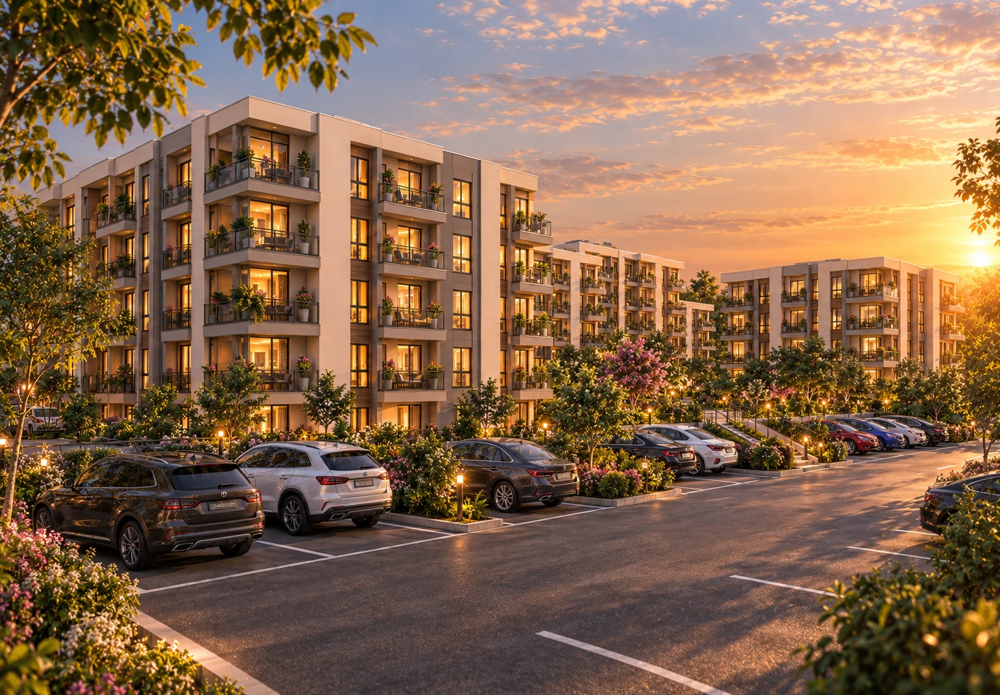
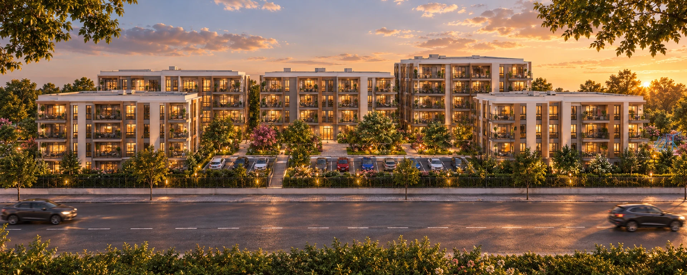
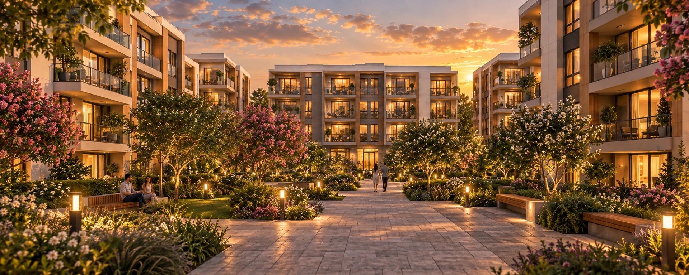
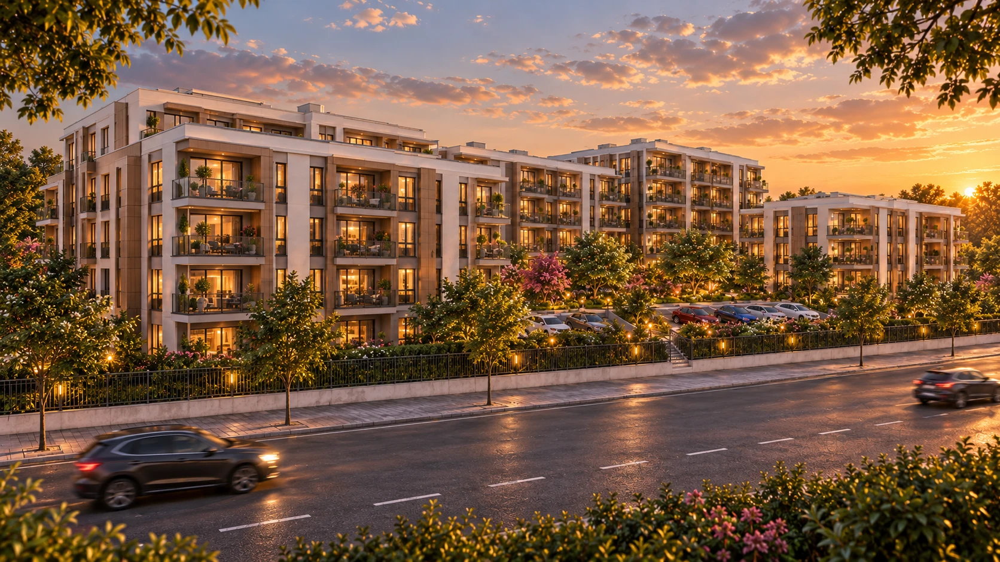

VOTRE VILLE
ALGÉRIEBéjaïa
Une adresse en Kabylie, dans une ville tournée vers la Méditerranée.

UN NOUVEAU LIEU DE VIE À BÉJAÏA
Les Oliviers. Cinq blocs autour d’un cœur paysager, dans une résidence de 6 000 m².
UN NOUVEAU LIEU DE VIE À BÉJAÏA
Les Oliviers. Cinq blocs autour d’un cœur paysager, dans une résidence de 6 000 m².
Vue d’ensemble, arrivée par la façade, stationnement à gauche, cour centrale, balcons, jardins extérieurs et retour à une vue aérienne. Faites défiler avec la molette, le pavé tactile, le doigt, les flèches ou la touche Page suivante.
À Béjaïa, la Résidence Les Oliviers réunit cinq blocs autour d’une cour paysagère. Une architecture ouverte sur les jardins, avec des balcons et des cheminements qui relient les espaces de vie.


Des perspectives végétales, des espaces pour s’asseoir, se retrouver ou simplement profiter de la fin de journée.
La résidence est située à Béjaïa, à proximité de l’aéroport Abane Ramdane, avec un accès à l’autoroute Est-Ouest.
Une adresse en Kabylie, dans une ville tournée vers la Méditerranée.
La proximité de l’aéroport pour vos départs et vos retours à Béjaïa.
Un accès au réseau autoroutier pour rejoindre les autres villes de la région.
Localisation et accès communiqués pour le projet. L’adresse précise et les temps de trajet sont à confirmer auprès du promoteur.
Les informations à réunir avec le promoteur pour choisir votre futur logement.
Typologies, surfaces, plans, étage, orientation et dimensions des balcons.
Prix, disponibilités, modalités de paiement et conditions de réservation.
Calendrier de livraison, prestations, équipements et conditions de stationnement.
Les coordonnées du promoteur, les plans, les tarifs et les disponibilités ne sont pas encore publiés sur ce site.

Les Oliviers
La vie, côté jardin.